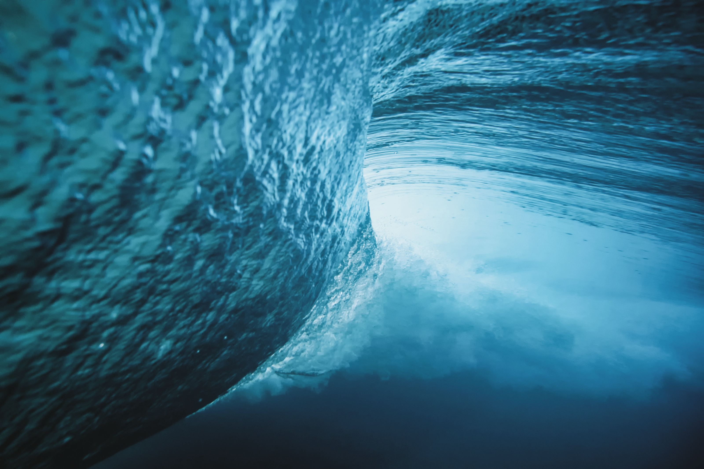

Chapter 02 · The Wave, Bristol
An ocean built in a field
Head Coach of Surfing at the world's first inland surf lake of its kind. The same wave, a thousand moods: shot from the water, from the air, and from inside the barrel with athletes like Kanoa Igarashi.
